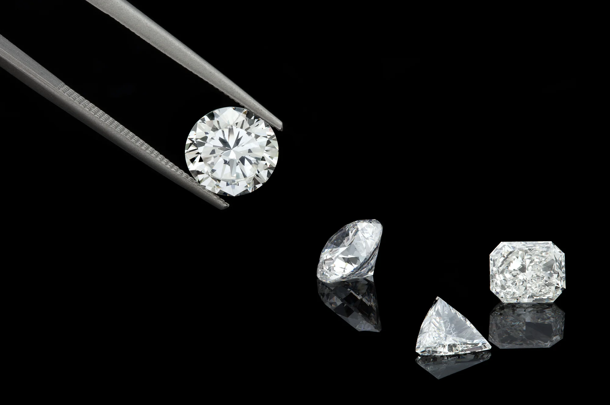

In the process of creating these man made diamonds, the extremely pure carbon-rich gases are stored and controlled in a chamber. These carbon-rich gases like Methane are heated to approximately 800 degree Celsius. These gases then break apart enabling the carbon atoms to separate within the gas. The carbon atoms then fall on to a diamond substrate starting to create layers, resulting in a diamond crystal. It takes six to ten weeks for CVD rough diamond manufacturer to process and further create Type IIa diamonds.
Lab-Grown diamonds are categorized as the quality diamonds. And with having Type IIa, you can certify them as the purest form of diamonds. Also, they are not only harder than traditional type Ia diamonds but, also more brilliance or shinier. According to researches, only 2% of mined diamonds have this kind of perfection.
Lab-Grown diamonds impact minimum on the earth and society. For every 1 Carat Lab grown diamonds, there is approximately 0.007 square meter of land that is getting disturbed and 70 liters of water that is being used.
It is a most curious question asked by many, and the answer is only predictable for natural diamonds; billions to thousands of times have been taken from carbon to rough stone diamond from creation under the earth ground. But synthetic lab-grown one takes almost 4 weeks; this process is under the lab chamber without a flawless problem. There are two types of a procedure; one known is High-Pressure High Temperature or HPHT. The second method for creating lab diamonds is Chemical Vapor Deposition (CVD).
Rupal Impex stands out as an exceptional Lab Grown Diamond Wholesaler & Manufacturer in Surat, offering a captivating selection of high-quality lab-grown diamonds. Founded in 2015 and headquartered in Surat, Gujarat, India, this dynamic company is passionately dedicated to challenging preconceptions and showcasing the true value of lab-grown diamonds. With an unwavering commitment to manufacturing excellence, Rupal Impex meticulously crafts lab-grown diamonds that rival their natural counterparts in every aspect, including their stunning attractiveness and brilliance. By prioritizing innovation, uncompromising quality, and unparalleled customer satisfaction, Rupal Impex is not only leading the charge in the lab-grown diamond industry but also expanding its global presence with unwavering confidence.
